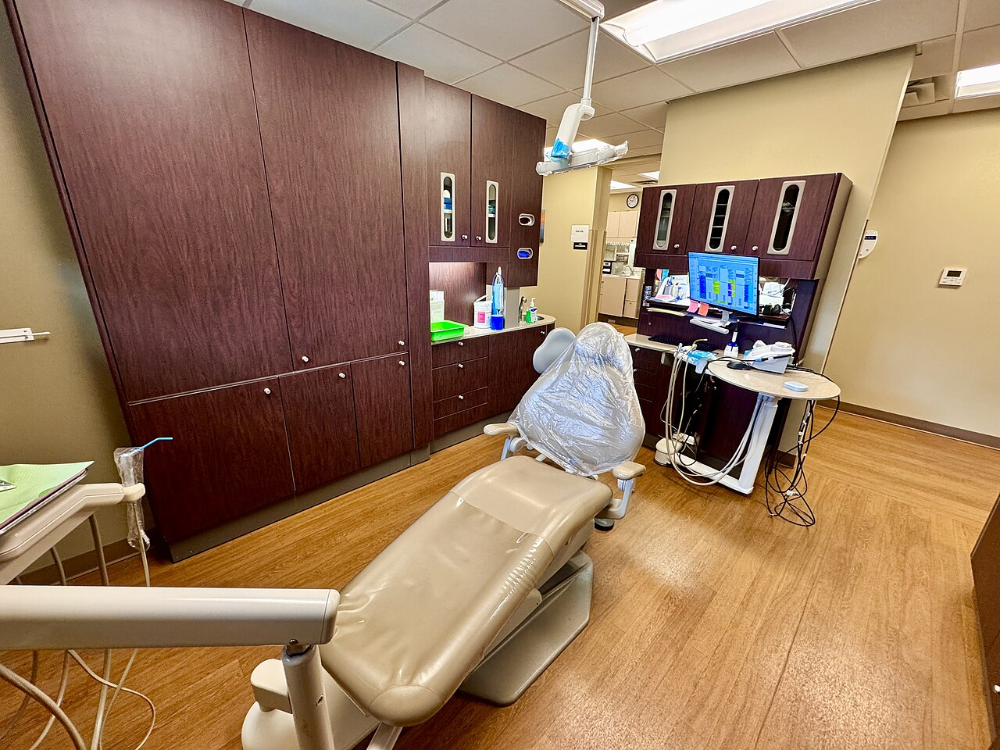

雲林縣斗六市・自 1980 年代起
看了四十年的牙，
想把該說的都寫下來
在診間裡三分鐘講不完的事，我們一篇一篇寫在這裡。從怎麼把牙刷放對角度，到缺牙之後該怎麼選，都是斗六街坊這些年最常問的問題。
- 40+年在地服務
- 5篇衛教文章
- — 本站累計瀏覽

最新文章
依最後更新時間排序，最新的在前

定期檢查
半年一次的洗牙：健保給付的那一次，到底在做什麼
洗牙不會把牙齒洗薄，也不是美白。它清的是自己刷不掉的牙結石，順便讓醫師在問題還小的時候先看見它。

缺牙重建
缺牙之後：活動假牙、牙橋與植牙怎麼選
缺一顆牙不只是缺一顆牙。旁邊的牙會倒、對面的牙會長長、齒槽骨會流失。三種重建方式各自的原理、代價與限制。

兒童牙科
孩子第一次看牙：時機、氟化物與窩溝封填
「乳牙反正會換掉」是最常見也最昂貴的誤解。從第一顆牙長出來後的六個月談起，帶爸媽看懂塗氟、窩溝封填與健保給付。

牙周照護
牙齦流血不是火氣大：牙周病的早期訊號
健康的牙齦被牙刷碰到不會出血。流血代表牙齦正在發炎，而發炎和退火無關，是牙菌斑長期堆積的結果。認識牙齦炎與牙周炎那條關鍵的分界線。

日常保健
貝氏刷牙法：刷了三十年，可能一直刷錯地方
刷得用力不等於刷得乾淨。刷毛斜四十五度對準牙齒與牙齦的交界，一次只顧兩顆牙，原地來回十次——這是把牙菌斑真正刷掉的方法。
診所資訊
雲林縣斗六市・在地經營超過四十年